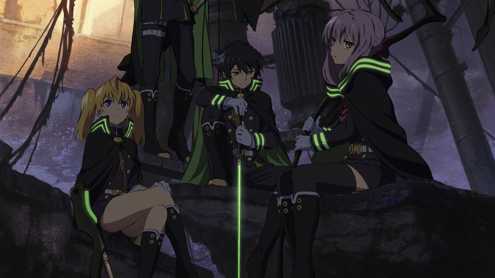
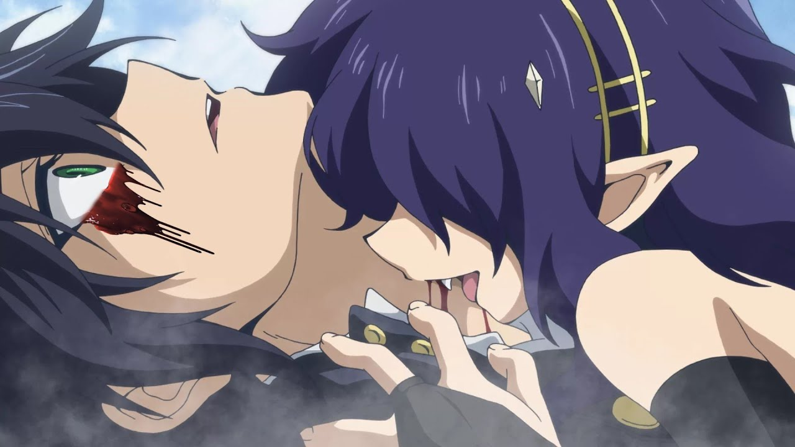

Отряд "Лунные демоны"
Отряд "Лунные демоны" (яп. 月鬼ノ組) - это элитный отряд Императорской армии, известный своими успехами в уничтожении вампиров. Главнокомандующим отряда является Глен Ичиносэ. Отряд делится на команды по пять и более человек, поскольку команда с меньшим количеством людей может просто не справиться с одним вооруженным вампиром. Члены отряда считают друг друга семьей. Солдаты пользуются проклятым оружием, зачарованным оружием и заклинаниями.
Этот отряд занимается уничтожением обычных вампиров и убийством или захватом выдающихся вампиров. "Лунные демоны" своим лидером считают только Глена Ичиносэ и с недовольством относятся к командованию генерала Тэнри Хираги.
Императорская армия
Императорская Армия (яп. 日本帝鬼軍) - одна из человеческих организаций, которая возглавляет людей Японии.
Состоит исключительно из членов семьи Хиираги. В отличии от других кланов в японском магическом обществе, у Хираги богатая и древняя родословная (1200 лет). Перед апокалипсисом клан Хираги были в вершине среди религиозных организаций Микадо но Они (Имперские демоны). Представители родственных кланов занимают более низкие звания и не присутствуют при собраниях командного состава, за исключением Подполковника Гурена. Существует 10 сильнейших кланов, которые поддерживают Хираги.
Вампиры
Вампиры 「吸血鬼, Kyūketsuki?」- это раса бессмертных человекоподобных существ, которые питаются человеческой кровью.
Человек,попробовавший кровь вампира, сам становится вампиром. Вампиры не испытывают таких сильных эмоций, которые испытывали будучи людьми, поскольку они теряют все больше своей человечности. Несмотря на то, что они сами раньше были людьми, вампиры считают людей не более, чем скотом. Они не любят увеличивать свою численность и редко превращают людей в вампиров. Сила вампира зависит от его возраста и происхождения. Когда вампира убивают, он/она превращается в пепел.
Демоны
Демоны (鬼, Oni?) являются источниками магической силы.
Раньше они были вампирами, которые позже были превращены в демонов при определенных обстоятельствах. Они могут быть запечатаны в проклятом оружии (鬼呪装備, Kiju Sobi?) и используются Императорской демонической армией Японии. В 11 главе Крул Цепеш говорит Микаэле, что если он не будет пить человеческую кровь, то станет бредящим, бессмысленным демоном. В 20 главе Ашурамару говорит Юичиро, что в конце концов все вампиры становятся демонами. В 23 главе Курето Хиираги экспериментирует над превращением вампиров в демонов и негодует из-за трудности выполнения этой задачи с вампирами низкого класса. Одной из целей Императорской армии является поимка благородных вампиров, чтобы превратить их в демонов, заточить в проклятое оружие и использовать для борьбы с вражескими силами. Казалось бы, сильные вампиры становятся сильными демонами, что, следовательно, делает Проклятое оружие более сильным.